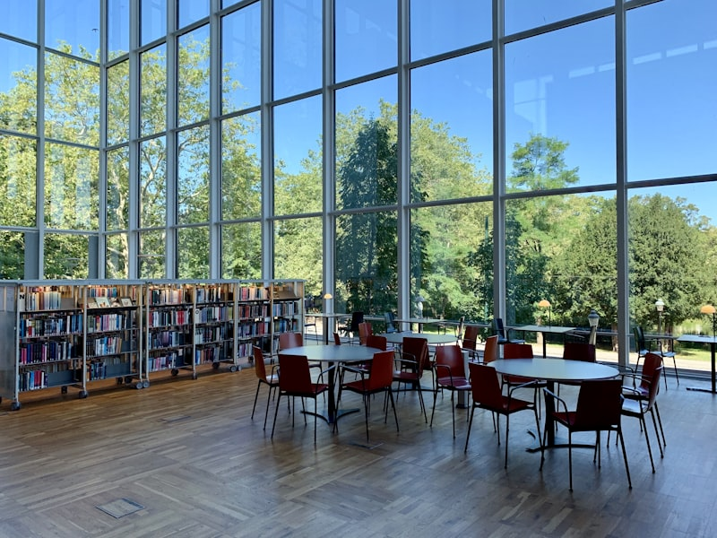
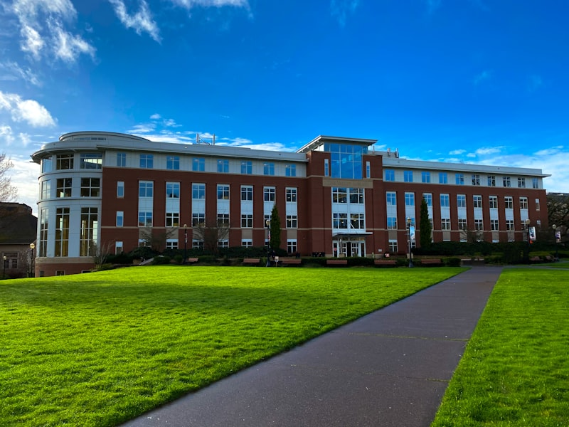

From Plato's Academy to AI-powered learning ecosystems — how the spaces where we think, discover, and grow have evolved, and where they must go next.
The university is nearly a thousand years old. Its architecture has always embodied our beliefs about knowledge — who creates it, who deserves it, and how it is best transmitted.
Before the university, there were schools of thought — literally. Plato's Academy (387 BC) was a grove of olive trees outside Athens where students walked and argued among the gardens. Aristotle's Lyceum had a covered walkway — the peripatos — where he lectured while walking. The Musaeum of Alexandria (3rd century BC) combined a library, lecture halls, botanical gardens, and communal dining. The spatial insight was already present: intellectual life required a designed environment.
A sacred grove dedicated to the goddess Athena, where Plato taught for nearly 40 years. There were no classrooms. Knowledge was transmitted through dialogue in gardens, under trees, along pathways. The Academy operated continuously for over 300 years — the longest-running educational institution in antiquity.

Founded in Bihar, India around 427 AD, Nalanda was the world's first residential university: 10,000 students and 2,000 teachers from across Asia. Its nine-storey library was said to have burned for three months when destroyed. Students studied astronomy, medicine, logic, and philosophy in a campus of monasteries, temples, and lecture halls.
Founded in Fez, Morocco by Fatima al-Fihri, al-Qarawiyyin is recognised by UNESCO as the world's oldest existing, continually operating university. It began as a mosque and expanded into a centre of learning in mathematics, grammar, medicine, and astronomy — a model that spread across the Islamic world.
The university as we know it was invented in medieval Europe. The University of Bologna (1088) was founded by students who hired their own teachers. The University of Paris (c.1150) grew from the cathedral schools of Notre-Dame. Oxford (1096) and Cambridge (1209) adopted the collegiate model: students living, eating, and studying in self-governing communities built around a quadrangle.
The medieval campus was a deliberate spatial instrument. The quadrangle enclosed a community. The chapel anchored it spiritually. The library preserved its knowledge. The hall fed it. The architecture embodied a philosophy: that learning was not a transaction but a way of life — a total environment that shaped the character as much as the intellect.

Wilhelm von Humboldt's founding of the University of Berlin in 1810 introduced the principle that teaching and research were inseparable — that professors should be active researchers and students should learn by participating in discovery. The Humboldtian model transformed the university from a place of transmission into a place of creation.
American universities adopted and amplified this model. Johns Hopkins (1876) was founded explicitly as a research university. The Morrill Land-Grant Acts (1862, 1890) created public universities across every US state, democratising access. MIT (1861) and Stanford (1891) fused research with applied science and engineering. By 1945, Vannevar Bush's report to President Roosevelt — "Science: The Endless Frontier" — cemented the university as the engine of national innovation.

The post-war period transformed the university from an elite institution into a mass one. The GI Bill (1944) sent 8 million American veterans to college. The Robbins Report (1963) expanded British universities dramatically. Global enrolment in higher education grew from 13 million in 1960 to over 235 million by 2023.
This expansion brought extraordinary democratisation — and new problems. The campus infrastructure built for thousands now served tens of thousands. Lecture halls grew to accommodate 500 students. Brutalist megastructures replaced quadrangles. The intimate, residential model of Oxford was replaced by the commuter campus, the satellite campus, and eventually the online platform. Scale was achieved. Intimacy was lost.
The university has survived for nearly a thousand years by reinventing itself in every era. The question is not whether it will survive the 21st century — but what it will need to become.
A trillion-dollar global sector facing existential questions about cost, relevance, access, and purpose — while sitting on campuses designed for a different century.
US tuition has risen 1,200% since 1980 — four times faster than inflation. The average US graduate carries $37,000 in student debt. Total US student loan debt exceeds $1.77 trillion. In England, annual tuition is £9,250. The model is unsustainable: families are paying more for an asset whose economic return is increasingly uncertain.
The fundamental question: if a four-year degree costs $100,000-$300,000, what exactly is the student buying — and is there a better way to deliver it?

44% of recent graduates work in jobs that don't require a degree. Google, Apple, and IBM have dropped degree requirements for many roles. The half-life of technical skills is now estimated at 2-5 years. Employers increasingly value demonstrated capability over credentials.
The university's monopoly on credentialling is eroding. Micro-credentials, bootcamps, apprenticeships, and portfolio-based hiring are growing alternatives. The degree is no longer the only pathway — and in some fields, it is no longer the best one.
44% of US college students report symptoms of depression. Anxiety, loneliness, and suicidal ideation have reached historic levels. Demand for campus counselling services has doubled in a decade, while funding has not kept pace. The pandemic accelerated a crisis that was already building.
The built environment contributes: isolated dormitory rooms, competitive pressure without community support structures, campuses designed for efficiency rather than belonging. The architecture of the modern university was not designed with student wellbeing as a primary brief requirement.

MOOCs promised to democratise education: Coursera, edX, and Khan Academy offer courses from top universities to anyone with an internet connection. The pandemic forced every university online overnight — and demonstrated both the potential and the limitations. Completion rates for MOOCs remain below 10%. Students overwhelmingly prefer in-person learning for the social experience.
AI is the next wave. ChatGPT has fundamentally disrupted assessment. AI tutors can provide personalised instruction at scale. The question is no longer whether technology will change the university — but what role the physical campus plays when knowledge is universally accessible.
Students from the wealthiest 25% of families are 8x more likely to earn a degree than those from the poorest 25%. First-generation students, Indigenous students, and students with disabilities face systemic barriers in access, retention, and outcomes. Legacy admissions, geographic concentration of elite institutions, and unequal school preparation create a system that often reinforces advantage rather than enabling mobility.
The university was supposed to be the great equaliser. For many, it has become another mechanism of stratification.

The 300-seat lecture hall is the most expensive way to deliver the least effective form of teaching. We have known this for decades. We have built them anyway.
Seven trajectories that could reshape the university over the next decade — from AI tutors to campuses without walls.
Personalised learning at scale — every student with an expert tutor, every assessment adaptive, every pathway unique.
From a 3-4 year event to a 50-year relationship — the university as a lifelong learning partner, not a one-time credential factory.
The city as classroom — universities that embed in communities, use the urban fabric as learning infrastructure, and dissolve the boundary between town and gown.
Campus design that treats student mental health as a primary brief requirement — not an afterthought addressed by a counselling office.
Buildings that reconfigure for different pedagogies — from seminar to maker space to performance venue — informed by real-time usage data.
Universities as living laboratories for sustainability — decarbonising their own operations while training the generation that must decarbonise everything else.
The university as anchor institution — deeply embedded in its city, accountable to its community, and measured by its local impact as much as its global ranking.


The most valuable learning happens in unplanned encounters between disciplines. Campus design must make interdisciplinary collision structurally inevitable — not optional.
Student wellbeing is an architectural problem as much as a pastoral one. Small communities, shared kitchens, visible nature, and acoustic comfort are not amenities — they are retention infrastructure.
Pedagogy is changing faster than buildings can be built. Every new space must be designed for adaptation: movable walls, reconfigurable furniture, infrastructure that supports uses not yet imagined.
The walled campus is an anachronism. The university's facilities — libraries, labs, maker spaces, performance venues — should serve the community as much as the enrolled student.
Every building should be a teaching tool. Energy systems, water management, and material choices should be visible, legible, and integrated into the curriculum.
When knowledge is free online, the campus must offer something that cannot be digitised: mentorship, hands-on research, community, serendipity, and the irreplaceable experience of being challenged in person.
The universities that will thrive are not those with the grandest buildings or the highest rankings. They are those that understood what a campus is actually for: creating the conditions under which people become more than they were when they arrived.
Occupancy sensors, environmental monitors, and usage analytics track how every room, corridor, and outdoor space is actually used — revealing the gap between designed intent and lived reality.
A digital twin aggregates this data to identify patterns: which spaces foster collaboration, which are avoided, when energy is wasted, and how student movement correlates with engagement and retention.
The campus responds: reallocating underused spaces, adjusting lighting and climate for circadian health, informing timetabling with real occupancy data, and evolving its physical form based on evidence rather than assumption.